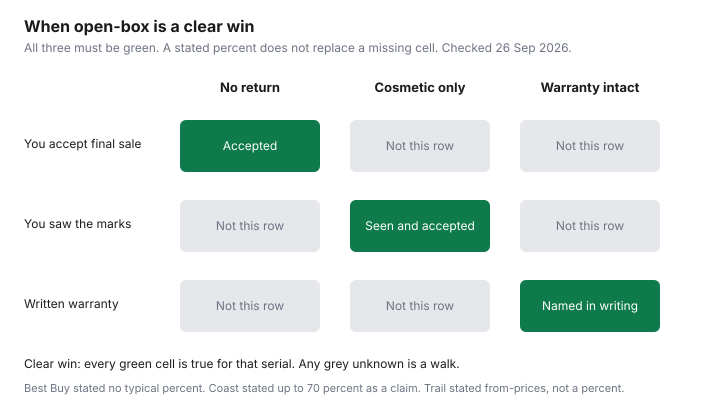

Household Items and Supplies · Canada
Scratch-and-Dent and Open-Box Appliances in Canada: How Much You Save and What You Give Up
An open-box fridge is a lower sticker and a shorter list of rights. The useful question is not “how much off is normal in Canada.” It is which rights that retailer removed, which warranty sentence still applies to that serial, and whether you can see the damage before the sale is final. This page is education. It is not a recommendation to buy a floor model, and it is not legal advice.
Three official pages were opened on 26 September 2026: Best Buy’s major-appliance open-box help and its return policy, Trail Appliances’ clearance page, and Coast Appliances’ open-box FAQ plus its refund policy. Dollar delivery fees for a new boxed unit live on the fees guide. Whether a store plan is worth adding is the extended-warranty guide. A card’s purchase protection is whatever that card’s certificate says. This guide does not rank cards.
Key takeaways
- Best Buy says open-box appliances are final sale. Returns, free shipping, and the Lowest Price Guarantee do not apply. The original manufacturer warranty is what that help page says you still have.
- Coast’s FAQ claims savings up to 70 percent off the regular price and a one-year functional warranty. Its refund policy, updated November 2025, says open-box, floor-model, and as-is purchases cannot be returned.
- Trail’s clearance footnote says sales are final, inspect before you pay, and pick up or take delivery within 14 days. The same page prints two warranty sentences. Get the one that applies to that unit in writing.
- No typical Canadian discount percent was on Best Buy’s help page. Do not borrow Coast’s “up to 70 percent” as a national average.
- Québec’s warranty of good working order, on the OPC page last modified 16 September 2026, covers listed goods bought or leased new from a merchant from 5 October 2026. That page does not mention open-box. This guide does not treat an open-box unit as covered.
What scratch-and-dent, open-box, and floor model actually mean
Treat the words as the retailer’s definitions, then confirm them on the unit. Best Buy’s open-box help page says each appliance is checked and tested before it is resold, and that those units are final sale. It does not publish a glossary that separates a customer return from a dented floor sample. A product page retrieved the same day added a delivery note: open-box appliances must be scheduled for delivery within 14 days of purchase. That note was on a product page, not a promise that every future listing will repeat it. Read the listing you are buying.
Trail’s clearance page, opened the same day, uses three labels and then blurs them. Open-box is “appliances in perfect condition, where the packaging has been opened,” with returned undamaged products and scratch-and-dent units with small cosmetic defects both listed under that heading. New-in-box covers cancelled orders, discontinued appliances, and end-of-line stock. Scratch-and-dent covers showroom display units, small cosmetic defects, and refurbished appliances restored to factory condition. A floor model shows up again in the warranty answer: scratch-and-dent and overstock “typically” have full warranties, while floor models may have limited coverage. If the tag says one label and the staff say another, the writing on the receipt is what you keep.
Coast’s FAQ says open-box appliances are products in like-new condition that were previously purchased and returned, inspected, tested, and repackaged. The same page also says certified open-box products have “no damage” and are “brand-new and certified.” Those sentences sit next to a warranty answer that allows limitations for esthetic or visual damage. A unit with a visible dent is not the same object as a returned unit with an intact finish. Ask which one is in the crate.
Typical discounts in Canada and where to find them
A typical percent is a number a page states, or it is not in this guide. Best Buy’s open-box help page does not state a usual discount. Do not fill that blank with a forum average. Coast’s open-box FAQ says certified open box is a way to “save up to 70% off the regular price.” That is the retailer’s ceiling claim. It is not a survey of what Canadians actually paid, and it is not a promise that the fridge in front of you is 70 percent off a price you can still find. Compare the open-box price with the current price of the same model number if that model is still sold new. If the new price is gone, you do not have a discount. You have a price.
Trail does not print a percent. It prints starting prices on the clearance page: dishwashers from $499, ranges from $699, fridges from $899. Those are floors for what was on offer when the page was opened, not a percent off a named regular price, and not a quote for the Kelowna, Victoria, or Annacis Island centre on a later day. The page says new stock arrives daily. A “from” price is the bottom of a range you have not seen.
Where to look is the same three doors, plus a chain whose FAQ draws a hard line around markdowns. Trail names clearance centres on Annacis Island (15,000 sq. ft.), inside the Victoria showroom (3,600 sq. ft.), and in Kelowna, and it says many of its 10 showrooms also have a clearance section. Coast says you can buy open-box online or in one of 19 stores. Leon’s FAQ, opened the same day, says all sales are final except a 72-hour window to report concealed damage, and that merchandise is covered by the manufacturer’s warranty excluding markdown and “As Is” sales. Leon’s is not the outlet row in the table. It is the reminder that a national chain can take the warranty off the discounted unit in one sentence. Delivery dollars for a standard purchase are the fees guide, not a reason to assume an outlet waives them.
Return and warranty rules to confirm before paying
Write three answers on the quote before you pay: can I return it, whose warranty covers a mechanical failure, and whose warranty covers the scratch. Best Buy’s help page says open-box appliances are final sale. It also says they come with the original manufacturer’s warranties, that qualifying products can be further protected by Best Buy protection plans, and that Best Buy policies such as returns, free shipping, and the Lowest Price Guarantee do not apply. The return-policy page lists “major appliances that are Open Box, floor models, and/or of the Miele brand” among items that cannot be returned. A new boxed major appliance is a different row. The fees guide records the tension on Best Buy’s new-unit pages. Do not import the new-unit window onto an open-box tag.
Trail’s footnote says clearance items must be paid in full, are sold as is, must be inspected by the customer before purchase, and are final sale. It also says “full manufacturer’s warranty applies unless otherwise stated.” Higher on the same page, the worry-free line says inspected or tested units “come with a 1-year manufacturer's warranty or equivalent.” The question section says coverage varies, scratch-and-dent and overstock typically have full warranties, and floor models may have limited coverage. Those are three sentences. Ask which one is printed on your invoice. A one-year equivalent is not the same as the balance of a ten-year sealed-system warranty, and this guide will not pretend they are.
Coast’s FAQ says open-box units have a one-year functional warranty and can qualify for an extended warranty sold separately, and that the manufacturer may limit coverage for esthetic or visual damage. The refund policy says Coast is not obligated to accept returns, that floor-model, open-box, and other as-is purchases cannot be returned, and that new unopened major appliances may be returned within 7 days without a restocking fee. Opened products that are authorized for return can face a minimum 50 percent restocking fee. The policy says it was last updated in November 2025. Service or repair requests follow the manufacturer’s warranty, not that return window. An extended plan is optional insurance of a sort. Price it only after you have read the manufacturer sentence, using the warranty guide.
Québec is a dated legal change, not a store policy. The Office de la protection du consommateur page on the warranty of good working order, last modified 16 September 2026, says the listed appliances are covered if they were bought or leased new (“à l’état neuf”) from a merchant from 5 October 2026. The clock runs from delivery. Refrigerators and freezers are in the six-year group on that page. Washers, dryers, and dishwashers are in the five-year group. The page does not mention open-box, scratch-and-dent, floor models, or refurbished goods. Because it does not, this guide does not say an open-box appliance counts. Older Québec warranties can still matter. The durations, exclusions, and how a claim starts are the Québec warranty guide. This page is not a legal opinion on your receipt.
Inspection checklist at pickup or delivery
Final sale means the inspection happens before you accept the unit, not during a cooling-off week. Use the same list at a clearance centre and at the curb.
- Model and serial on the machine match the quote and the tag. A “similar” dented unit is a different appliance.
- Photograph every face, the door gasket, the kickplate, the back panel, and the power cord, in the light, before it is wrapped again.
- Ask the seller to point at every disclosed mark. A scratch that was not on that list is a new fact. On a final-sale unit, a new fact is a reason to refuse, not a reason to hope.
- Open the door, check that it self-closes or latches as that model should, and look at hinges and levelling feet. A cosmetic program that will not open the door is not a cosmetic program.
- If power and water are available, run a short cycle or at least confirm the control panel lights and the dispenser. If they are not available, write “not tested” on your copy of the receipt before you sign.
- For a fridge, confirm the doors are reversible only if you need that, and that shelves and bins match the listing. Missing bins are parts, not patina.
- Do not sign a form that says you inspected the unit and found it satisfactory if you inspected the carton.
Trail’s own clearance answers say the point of buying there is that you see the scratch, test the door, and decide in person. Coast says certified units were inspected by its specialists. Best Buy says Geek Squad agents check appliances in a processing facility. None of those sentences replaces your photos. If a later failure is mechanical, the warranty sentence is the path, which is also why the repair-or-replace worksheet belongs in the same folder as the receipt.
Delivery and haul-away when buying from outlets
The sticker is not the truck. Best Buy’s open-box help page says free shipping does not apply to open-box products. The product-page note retrieved the same day said delivery has to be scheduled within 14 days of purchase. Neither sentence printed a delivery dollar amount. Use the fees guide for Best Buy’s published scheduled-delivery and haul-away figures on the pages that guide opened, and then ask whether that schedule is the one attached to this open-box order. Do not assume the new-unit haul-away price survived the open-box exception.
Trail says it offers the same professional delivery and installation for clearance items as for full-price products, and the footnote says the product must be picked up or delivered within 14 days. No fee table was on that page. Coast’s refund policy says delivery and installation costs are non-refundable when the service has been attempted or completed, and that additional delivery fees may apply for returns and exchanges, including warranty exchanges. That matters less for an open-box unit you cannot return, and more if a warranty exchange needs a second trip. Ask for the delivery fee, the hookup, and haul-away as three lines. Leon’s FAQ says drivers will uncrate and set a major appliance in place but will not connect it to electrical, plumbing, or gas, and that installation is an additional fee through the store. A restocking conversation on a final-sale unit is the wrong time to discover the doorway is too narrow. Measure first.
Haul-away of the old machine is a separate purchase unless the quote says it is included. An outlet that sells as-is is not automatically a recycler. If the line is missing, price a pickup before you celebrate the discount. The old unit still has to leave, and a scratched new one still has to fit the opening you measured.
Decision table: when open-box is a clear win
Open-box is a clear win only when three things are true at once: you have seen the cosmetic issue and accept it, a written warranty covers a mechanical failure for a period you can name, and you can live without a return. A large percent off does not fix a missing warranty. A full warranty does not fix a dent you will hate every time you open the fridge. If any one of the three is unknown, it is not a clear win. It is a quote you have not finished.
| Retailer | What the page calls it | Discount stated | Returnable? | Manufacturer warranty | Delivery and haul-away |
|---|---|---|---|---|---|
| Best Buy | Open-box major appliances, checked before resale. Return policy also names floor models and Miele major appliances. | Not stated on the open-box help page. | No. Final sale. Returns do not apply. | Original manufacturer warranty, on the help page. Lowest Price Guarantee does not apply. A store plan is separate. | Free shipping does not apply. A product page said schedule delivery within 14 days. Dollar fees were not on the open-box help page. |
| Trail Appliances clearance centres | Open-box, new-in-box, and scratch-and-dent, including some showroom and refurbished units. | Not a percent. Page lists dishwashers from $499, ranges from $699, fridges from $899. | Footnote: all sales are final. Inspect before purchase. Paid in full. | Page says a 1-year manufacturer warranty or equivalent, and also that a full manufacturer warranty applies unless otherwise stated. Floor models may be limited. | Same delivery and installation services as full-price, on that page. Pick up or deliver within 14 days. No fee table on the page. |
| Coast Appliances | Open-box: previously purchased and returned, inspected and tested. FAQ also says certified units have no damage. | FAQ says save up to 70% off the regular price. That is the page’s ceiling claim. | No. Refund policy updated November 2025: floor model, open box, and as-is cannot be returned. | One-year functional warranty. Esthetic or visual damage may be limited. Extended plan sold separately. | No open-box delivery price on the FAQ. Delivery and installation costs are non-refundable once the service is attempted or completed. |

Rebate programs are a separate gate. Ontario’s Home Renovation Savings appliance page, read 26 September 2026, says used or refurbished appliances do not qualify. It does not say whether a retailer open-box unit counts as new. Do not assume the rebate amounts survive an open-box receipt. Ask the program with the model number before you treat the discount and the rebate as a stack.
Sources & date stamps
- Best Buy, “Major Appliance Open Box Products,” and Best Buy return and exchange policy, text retrieved 26 Sep 2026. Open-box appliances are final sale. Original manufacturer warranties apply. Returns, free shipping, and the Lowest Price Guarantee do not apply. Return policy lists open-box, floor-model, and Miele major appliances as non-returnable. A product page the same day said open-box delivery must be scheduled within 14 days. No typical discount percent was on the help page.
- Trail Appliances, “What is Clearance,” opened 26 Sep 2026. Definitions, clearance-centre sizes, “from” prices, 14-day pickup or delivery, final sale, and the warranty sentences quoted above.
- Coast Appliances open-box FAQ and refund policy, opened 26 Sep 2026. Up to 70 percent claim, 19 stores, one-year functional warranty, and the November 2025 return rules, including the 7-day new-unopened window and the minimum 50 percent restocking fee on authorized opened returns.
- Leon’s FAQ, opened 26 Sep 2026. All sales final, 72 hours to report concealed damage, manufacturer warranty excluding markdown and “As Is,” drivers do not connect electrical, plumbing, or gas.
- OPC, warranty of good working order for listed appliances, last modified 16 Sep 2026, opened 26 Sep 2026. New goods from a merchant from 5 Oct 2026. Open-box is not mentioned.
- Home Renovation Savings appliance page, read 26 Sep 2026. Used or refurbished appliances do not qualify. Open-box is not defined there.
Frequently asked questions
What is the difference between open-box, scratch-and-dent, and floor model?
The labels are the retailer's, and they are not interchangeable. Best Buy's open-box help page describes units that were checked before resale. Trail's clearance page splits open-box, new-in-box, and scratch-and-dent, and it treats floor models as a warranty question of their own. Read the definition on the page for that unit, then look at the actual machine.
How much can I save on an open-box appliance?
Only the discount that page prints. Coast's open-box FAQ says you can save up to 70 percent off the regular price, which is a ceiling claim, not an average. Best Buy's open-box help page does not state a typical percent. Trail prints starting prices, including dishwashers from $499, ranges from $699, and fridges from $899, which are not a percent off a named regular price.
Can I return an open-box appliance?
At the three retailers opened for this guide, the open-box or clearance row is not a normal return. Best Buy says open-box appliances are final sale, and its return policy also lists open-box, floor-model, and Miele major appliances as non-returnable. Trail's clearance footnote says all sales are final. Coast's refund policy, last updated November 2025, says floor-model, open-box, and other as-is purchases cannot be returned.
Does the manufacturer warranty still apply?
Sometimes, and the sentence on the page is the one that counts. Best Buy says open-box products come with the original manufacturer's warranties, while returns, free shipping, and the Lowest Price Guarantee do not apply. Trail's clearance page states both a one-year manufacturer's warranty or equivalent and a full manufacturer's warranty unless otherwise stated, with floor models possibly limited, and Coast offers a one-year functional warranty with esthetic limits. Get the wording for that serial before you pay.
What should I check at pickup?
Match the serial to the tag, photograph every mark, and run what you can before anyone leaves. Confirm the scratch you were shown is the only one, and do not sign a delivery receipt that says the unit was inspected if you have not looked. If the cord, door, or a cycle fails in front of you, refuse it then, because a final-sale unit does not become returnable the next morning.